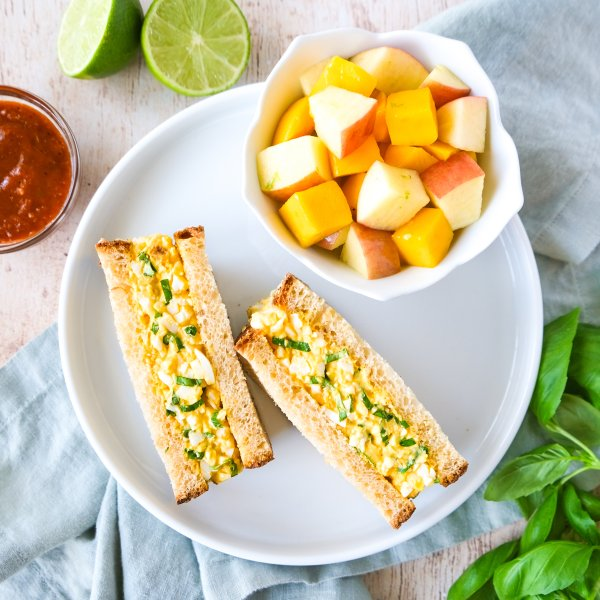

Spicy Thai Red Curry-Basil Egg Salad Sandwich with Apple Mango Medley

Total Time
25 min
Nutrition (Per Serving)
676.9 kcalCalories
26 gProtein
71 gCarbs
33.6 gFat
Full nutrition table
| Calories | 676.9 kcal |
| Total fat | 33.6 g |
| Saturated fat | 7.5 g |
| Trans fat | 0.1 g |
| Cholesterol | 489.3 mg |
| Sodium | 640.6 mg |
| Carbohydrates | 71 g |
| Fiber | 8.8 g |
| Sugars | 38.7 g |
| Protein | 26 g |
| Potassium | 731.6 mg |
| Calcium | 201.2 mg |
| Iron | 3.7 mg |
| Vitamin A | 740 IU |
| Vitamin C | 69.9 mg |
| Vitamin D | 5.6 IU |
Cookware
Ingredients
- ½ small pkgfresh basil
- 2Gala apples
- 12hard-cooked eggs, peeled
- 1lime
- 2mangoes
- 20 mlThai curry paste, red
- 8 sliceswhole grain bread
- honey
- mayonnaise
- rice vinegar
- salt
Steps
- Wash and dry the fresh produce.1 lime
2 mangoes
2 Gala apples
½ small pkg fresh basil - Zest and juice lime into a medium bowl.
- Peel mangoes and slice flesh away from the pits, starting with the flat sides. Medium dice and add to the bowl with the lime.
- Quarter, core, and medium dice apples; add to the bowl and stir to combine the fruit medley. Set aside.
- Place mayo, curry paste, vinegar, honey, and salt in another medium bowl. Stir to combine the dressing.⅓ cup mayonnaise
4 tsp Thai curry paste, red
1 tbsp rice vinegar
1 tsp honey
½ tsp salt - Roughly chop eggs and add to the bowl with the dressing. Using a potato masher, mash and combine the egg salad.12 hard-cooked eggs, peeled
- Pick basil leaves off the stems, roll up crosswise, and thinly slice into ribbons. Add to the bowl with the egg salad and stir to combine.
- Place half of the bread slices on a flat surface and divide egg salad between them; cover with remaining slices and press gently to adhere. Cut sandwiches in half.8 slices whole grain bread
- To serve, divide sandwiches and fruit medley between plates. Enjoy!